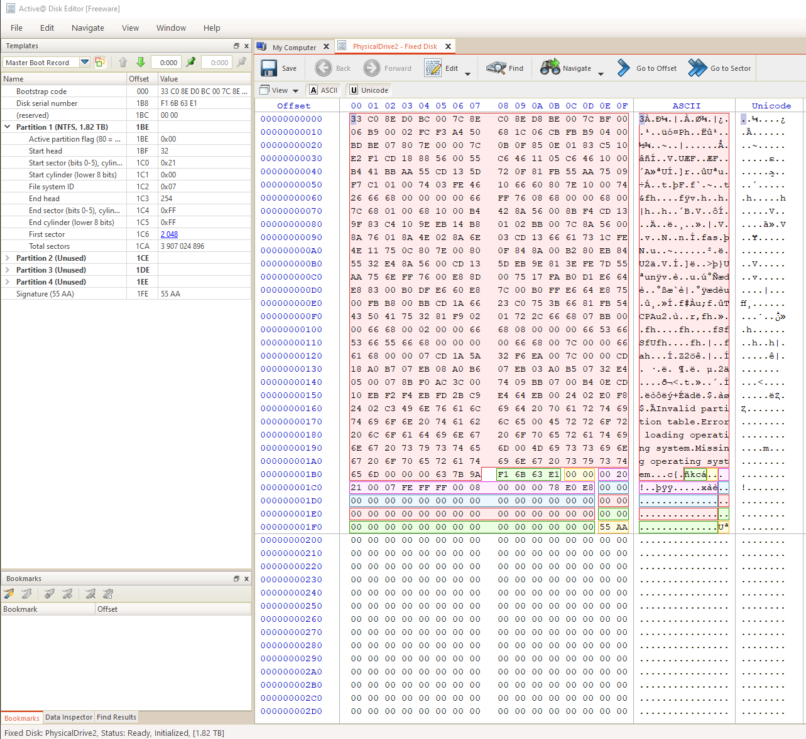

Page 1 of 2
Quick Format
Posted: Sun Nov 07, 2021 3:49 am
by 21grammes
Hello
I have accidentally formatted unmounted encrypted partition and obviously, now my disk shows 100% free space.
I have the header backup'ed and i still know the password but i don't know how and IF, i can get back all my data.
what can/should i do?
any help would be welcome, please!
-- EDIT --
for anyone getting to this thread in the future, solution is:
1:*quick format by error*
2: don't touch anything, don't write anything to the disk.
3: clone the deleted disk <sector by sector> to another disk of the same size (preferably).
4: restore header to the original (deleted) disk
5: restart windows to be able to mount the disk
6: mount the disk
7: decrypt it
8: launch recovery process once disk fully decrypted.
9: enjoy getting back your "deleted" data.
Re: Quick Format (2)
Posted: Mon Nov 08, 2021 8:20 pm
by DavidXanatos
hmm.... first of all make a full sector backup of the broken partition in order to not break it further when working on it.
Than try restoring the header and then mounting the colume, you will probably get somethign that appears unformated, but than you can try wunning some file recovery tools that are designed for the case of having formated the wrong partition, this should be able to find the files.
Re: Quick Format (2)
Posted: Mon Nov 08, 2021 11:24 pm
by 21grammes
Thanks for your fast reply.
i'm gonna try this.
i'll update the thread about how things went, maybe it'll help some other people like me in the future.
Re: Quick Format (2)
Posted: Fri Nov 12, 2021 1:10 am
by 21grammes
DavidXanatos wrote: ↑Mon Nov 08, 2021 8:20 pm
hmm.... first of all make a full sector backup of the broken partition in order to not break it further when working on it.
Than try restoring the header and then mounting the colume, you will probably get somethign that appears unformated, but than you can try wunning some file recovery tools that are designed for the case of having formated the wrong partition, this should be able to find the files.
so:
>had a HDD crypted with disk cryptor
>quick formated it by mistake without having the disk mounted
>did no writing or whatever on the disk right after realizing my mistake.
>did a full sector by sector clone of the original HDD
>successfully restored the header on the original HDD
there was no option to "mount" the disk via disk cryptor right after restoring the header, windows was still showing a 100% free space partition.
i still tried to start a file recovery process via the paid recovery software R-STUD**
>almost no result, and the small amount of results that the software found was corrupted when restored.
>>restarted the computer
>>after restarting, i was able to "mount" the disk, so i did.
>>disk successfully mounted
>>the disk now shows as "inaccessible" by windows, even tho in the windows disk management interface, the disk appears as a normal one.
>>>did a second try with R-STUD**
>>>same result as before mounting the drive (corrupted & almost no result)
>>>>tried the free recovery software DMDE
>>>>still almost no result, and the few results were also corrupted.
Anything else that i can try?
Re: Quick Format
Posted: Sat Nov 13, 2021 11:39 am
by DavidXanatos
mounting must work if it doe snot moutn the otehr tools will not be able to do anything
Re: Quick Format
Posted: Sat Nov 13, 2021 2:21 pm
by 21grammes
DavidXanatos wrote: ↑Sat Nov 13, 2021 11:39 am
mounting must work if it doe snot moutn the otehr tools will not be able to do anything
i was able to mount it after restarting windows, so yeah now it's indeed mounted.
but still, the recovery softwares aren't finding anything but a lot of corrupted .swf files or random corrupted files.
what could be wrong?
i'm 100% sure that was the right header.
Re: Quick Format
Posted: Sun Nov 14, 2021 5:24 pm
by DavidXanatos
hmm.... grab a disk editor and use it to view the mounted partition, if you can find anythign that does not look like random garbage than the header was right, if there is only high entropy garbage than probably its the wrong header.
Re: Quick Format
Posted: Mon Nov 15, 2021 12:13 am
by 21grammes
honestly this is beyond my knowledge/understanding, i'm not able to tell the difference between "high entropy garbage" and normal things in hex aha.
i took some screenshots of the mounted disk:
>1:
>2:

what am i supposed to look at?
Re: Quick Format (2)
Posted: Tue Nov 16, 2021 4:04 am
by 21grammes
DavidXanatos wrote: ↑Mon Nov 08, 2021 8:20 pm
hmm.... first of all make a full sector backup of the broken partition in order to not break it further when working on it.
Than try restoring the header and then mounting the colume, you will probably get somethign that appears unformated, but than you can try wunning some file recovery tools that are designed for the case of having formated the wrong partition, this should be able to find the files.
i've tried to reproduce the steps of my original mistake but with a clean, brand new USB stick, in which i've put some mp4 files and some images.
here's what i did:
1: encrypt the USB Stick
2: put the mp4 files etc
3: backup the header
4: unmount the disk
5: quick format the disk "by mistake"
6: restore the header
7: restart windows to be able to mount the disk via DiskCryptor
8: mount the disk
9: start the recover process with different recovery softwares
tried 5 different recovery softwares, and still, none of them were able to find any of the previous files.
so i guess we can surely say it's not related about the header.
Any other ideas of what to try sir?
Re: Quick Format
Posted: Tue Nov 16, 2021 2:07 pm
by DavidXanatos
Try the same test just skip the encryption
create volume,
add files
quick format
try recovering
to test if any of these tools is any good